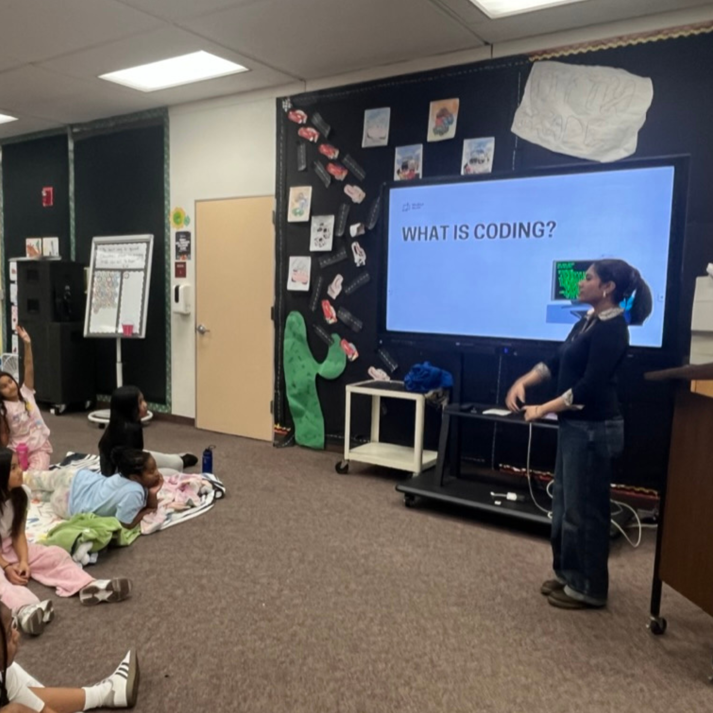

Me!

Norcal trip!

NCWIT Regional Ceremony

Teaching Way2Eazy

Model UN
Majella Rajan
¡ Hi! I'm Majella, a girl from Los Angeles, California. I have a passion for computer science and engineering, complemented by my love for music and reading. I also love traveling and matcha!! I'm excited to share my journey with you! Feel free to email me at majicsrn@gmail.com or reach out on my social media platforms linked below.
Founder & Tutor @ Way 2 Eazy April 2024—Present
April 2024—Present
Designing six computer science courses on coding ranging from HTML, CSS, Java Beginner & Intermediate, Ruby and Python Created website for free access to courses above Organizing interactive coding workshops covering topics of web-development, and Python basics with 24 participants Overseeing 4 active chapters in 3 countries, coordinating volunteer-driven workshops and coding events Donating 100+ Way2EazyBytes: consisting of binary bracelets with positive messages to kids and teens in hospitals, fostering learning and providing encouragement during their recovery with a fun DIY as well
Founder/Developer @ Collab4Change  Aug 2024—Present
Aug 2024—Present
Created a platform for students to find student organization opportunities and scholarships, connecting over 600+ users Reached 4k accounts on instagram Built in function for users to add student-led organizations with 150+ organizations initiated on this platform Built in function for users to access 100+ scholarships Utilized HTML, CSS, Javascript, and Java to build the website
Author and Illustrator: “HTML Copy, CSS Paste: The Only Guide You Need” @ Amazon Publishing  June 2024—Oct 2024
June 2024—Oct 2024
Authored and illustrated a 90 page beginner-friendly book aimed at teaching HTML and CSS to aspiring web developers, focusing on practical applications and hands-on projects.
Use 'HTML & CSS: the Only Guide you Need: for absolute beginners with Projects' to learn the fundamentals of web development! This book breaks down the complexity of HTML and CSS while catering to younger readers and beginners. Create your own stunning websites by following simple, step-by-step instructions. These tasks allow you to apply what you've learned, polish important skills, and unleash your creativity. No matter how much or little coding expertise you have, this book provides you with the tools you need to build a solid web development foundation.
Computer Science Portfolio @ GitHub  Jul 2022—Present
Jul 2022—Present
I'm familiar with different languages including Python, Java, JavaScript, HTML, and CSS. I am also familiar with programs and softwares including TensorFlow, Jupyter Notebooks, scikit-learn, and pandas. I'm currently exploring machine learning and OpenAI and I hope to learn more about computer science in college.
Website Developer @ Gahr High School  Apr 2023—Present
Apr 2023—Present
Designing and developing websites for nine school clubs, enhancing their visibility Collaborating with club leaders to incorporate personalized features and monthly updates All websites have a gallery showcase of monthly events Used by minimum 15 club members per club
Student Representative @ Student Site Council  May 2024—Present
May 2024—Present
One of three students to represent the students of Gahr High School Overlooking upcoming events and funding for the school Pre-reading 10 pages before each meeting to reflect and ask questions regarding budget
Delegate @ Model United Nations  May 2024—Present
May 2024—Present
Representing six countries yearly at conferences of 35-40 people, developing plans and ideas to solving issues created by the United Nations Mentoring 15 younger delegates by reading their position paper, offering feedback, and tips Directed 2 school conferences with a focus on writing a topic synopsis and resources for students and organizing each committee Received 10 Awards combined in Best Delegate, Outstanding, Commendation, and Research
Club Vice President @ Math and Science Club  May 2024—Present
May 2024—Present
Organized and led three large-scale meetings with 50+ participants, hosting discussions on math challenges Hosted club rush events, designing posters and flyers to highlight the club's initiatives to recruit new members Planned and executed hands-on science and math workshops, with concepts through practical applications like elephant toothpaste, slime, and more
Treasurer @ Class of 2026, Engineering and Architecture Club, CSF  May 2024—Present
May 2024—Present
Hosted guest speaker sessions with engineers and architects from local colleges, providing members with industry insights and career inspiration
Led a team in constructing buildings with cardboard, such as bridges or towers, for club showcases;
Managed club finances effectively, ensuring funding for scholarships, community service projects, and member recognition events
Planned community service events, such as tutoring sessions to freshman and sophomores
Created yearly card drives to support students in St.Judes Hospital
Raised 400+ dollars through boba fundraisers and selling spam musubi
Focused on building more fundraisers, and allocating funds to plan Prom and Winter Formal
Student @ New York Junior Science Academy  Aug 2024—Present
Aug 2024—Present
Accepted an prestigious science academy with a 10%> acceptance rate. Conducted research on artificial intelligence applications in healthcare and education. Worked with a team of four to complete requirements for the challenge on ethical AI
Software Engineer Fellow @ Headstarter AI  Jun 2024—Aug 2024
Jun 2024—Aug 2024
Built four AI apps using NextJS, OpenAI, and PHP Worked with a partner to develop a proposal of “Codigo” an online flashcard app that helps with coding problems for a hackathon Took mock technical interviews to see my skills and accuracy receiving a score of 86%
Marketing Intern @ Mind4Youth  Jun 2024—Jul 2024
Jun 2024—Jul 2024
Assisted in developing and executing youth-focused marketing campaigns aimed at demographic segments aged 13-24. Conducted market research and analyzed trends to identify preferences and behaviors of the youth market.
Fellow @ Civics Unplugged Fellowship  Sep 2024—Present
Sep 2024—Present
1 of 350 fellows to explore ethical AI practices Created a study case at the end of the program researching water scarcity Developed “EthicallyAI” for Solvathon, a plan to regulate AI learning into schools allowing for ethical use; allows for students to look into learning with AI using prompts
Web Developer @ FreePharmacy  Jun 2024—Jun 2024
Jun 2024—Jun 2024
Developed for the Congressional App Challenge. Focuses on Health Literacy, Making wise choices in FreePharmacy, Developed a Medicine Tracker!
Student Learner @ Girls Who Code  Jun 2023—July 2023
Jun 2023—July 2023
Focused on web development, an introduction towards cybersecurity, and JavaScript
Independent Research 4 Catiglass as a Tool for Affordable Cataract Monitoring  Sep 2024—Oct 2024
Sep 2024—Oct 2024
By making cataract detection accessible and affordable, Catiglass aims to empower individuals to take proactive steps toward maintaining their vision. This initiative has the potential to revolutionize how cataracts are detected and managed, ultimately reducing the burden of vision impairment in communities worldwide.
NCWIT Aspirations in Computing - Regional Honorable Mention @ National Center for Women & Information Technology  Jan 2024
Jan 2024
Recognized for my commitment to increasing diversity in technology and inspiring young women to pursue careers in computing.
California Scholarship Federation @ Gahr High School  Aug 2022 - Present
Aug 2022 - Present
The California Scholarship Federation (known as CSF) is a state-wide academic honors organization whose purpose is to recognize students who have demonstrated outstanding academic achievement. CSF Membership is based on qualifying grades that are earned each semester.
Certificate of Marketing Intern @ Mind4Youth Jul 2024
Jul 2024
Completed an internship focused on digital marketing strategies, helping to promote youth engagement programs.
Certificate Scholar @ Girls Who Code  Jun 2023
Jun 2023
Participated in coding camps and workshops aimed at empowering girls in technology, culminating in a capstone project showcasing my coding skills.
Recognized by Golden Student Bears @ Way2Eazy  Aug 2024
Aug 2024
Acknowledged for my leadership and contributions to local youth initiatives that promote education and mentorship. Featured on LinkedIn and Instagram.
Recognized by @ ProfessorKevShow  Oct 2024
Oct 2024
Featured for my innovative projects and community engagement efforts that bridge the gap in STEM education. Featured on a video interview!
Copyright © 2024 Majella Rajan. All rights reserved.